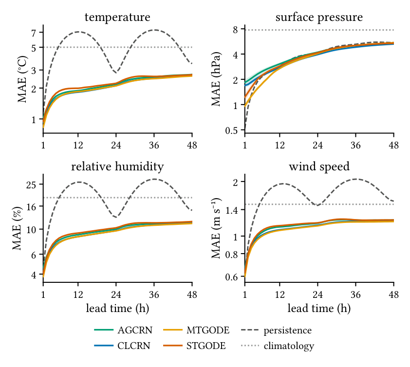
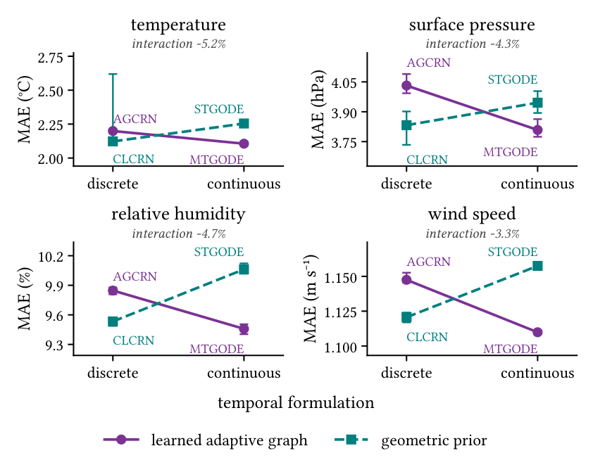
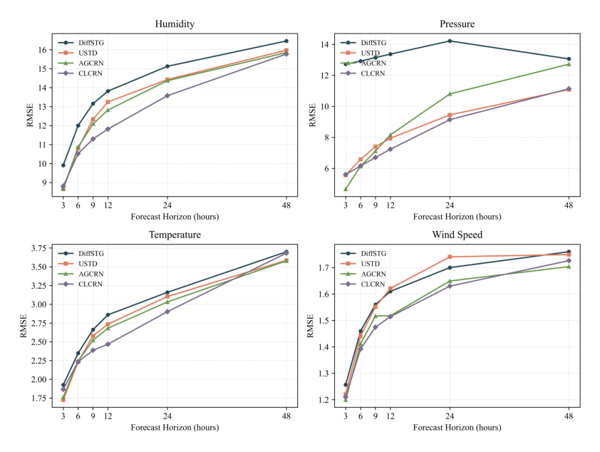
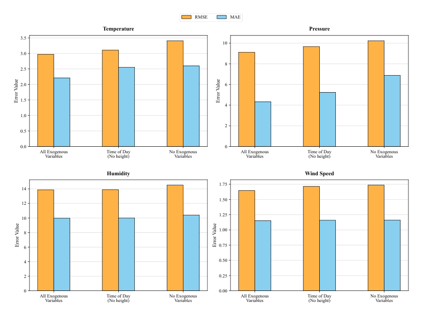

Findings
Results
Eight architectures against two shared baselines, on 32 South African weather stations, out to 48 hours — reported workstream by workstream.
How to read this page
All three workstreams share the dataset, the chronological split, the preprocessing, the training loss and the 48-hour horizon, and all three measure against the same two baselines. They do not share the number of random seeds, the input regime, or the full metric set, because each workstream's research question demanded something different.
Results are therefore reported per workstream, against the shared baselines — the comparison each study actually ran. Numbers are not merged into a single ranking across workstreams, because the differing seed budgets and input regimes mean a cross-workstream difference of a few percent cannot be attributed to the architecture.
Where this matters in practice. The two workstreams reporting here agree closely on AGCRN — 2.197 °C and 2.194 °C average temperature MAE, computed independently. They differ on CLCRN (2.410 against 2.146 °C) because one CLCRN run out of the continuous-time workstream's ten temperature seeds failed to converge and was deliberately retained in the reported mean rather than discarded. Excluding that run, the two agree on CLCRN as well. The divergent run is discussed in the continuous-time workstream; it is a reliability finding, not a discrepancy to be smoothed over.
| Continuous-time | Diffusion-based | Lightweight | |
|---|---|---|---|
| Student | Praise Jaravani | Génevieve Chikwanha | Zoleka Fuyana |
| Challengers | MTGODE, STGODE | DiffSTG, USTD | STLGRU, LiteSTGNN |
| Random seeds | 10 (42–51) | 3 (2024, 2025, 2026) | To be confirmed |
| Input regime | all six variables in, one target out | univariate per variable | To be confirmed |
| Point metrics | MAE, RMSE, NRMSE | MAE, RMSE | To be confirmed |
| Additional metrics | valid forecast horizon; PR-AUC, F1, CSI for extreme-event detection | CRPS for probabilistic forecasts | parameter count, inference cost |
| Extra analyses | extreme-stratified error, 2×2 factorial design, named heatwave case study, seed stability | exogenous-covariate ablation, spatial and elevation error patterns, learned adjacency maps | capacity–accuracy trade-off |
| Hardware | NVIDIA L40S | NVIDIA A100 | To be confirmed |
Workstream 1
Continuous-time: MTGODE and STGODE
Four architectures, crossing the spatial prior (learned adaptive graph against geometric construction) with the temporal formulation (discrete recurrence against continuous-time neural ODE). Ten seeds per cell, 190 runs in total.
| Lead | AGCRN | CLCRN | MTGODE | STGODE | Persist. | Clim. |
|---|---|---|---|---|---|---|
| Temperature (°C) | ||||||
| 3 h | 1.417 | 1.711 | 1.284 | 1.470 | 2.953 | 5.002 |
| 6 h | 1.730 | 1.983 | 1.640 | 1.864 | 5.168 | 5.002 |
| 9 h | 1.844 | 2.095 | 1.789 | 1.978 | 6.574 | 5.003 |
| 12 h | 1.886 | 2.143 | 1.848 | 1.991 | 7.064 | 5.005 |
| 24 h | 2.181 | 2.402 | 2.102 | 2.226 | 2.821 | 5.005 |
| 48 h | 2.713 | 2.910 | 2.623 | 2.702 | 3.462 | 5.007 |
| Average | 2.197 | 2.410 | 2.108 | 2.256 | 5.318 | 5.005 |
| Surface pressure (hPa) | ||||||
| 3 h | 2.049 | 1.845 | 1.252 | 1.587 | 1.295 | 7.749 |
| 6 h | 2.434 | 2.183 | 1.702 | 2.169 | 2.080 | 7.749 |
| 9 h | 2.753 | 2.467 | 2.219 | 2.557 | 2.493 | 7.749 |
| 12 h | 3.051 | 2.765 | 2.692 | 2.873 | 2.877 | 7.749 |
| 24 h | 4.207 | 3.954 | 4.059 | 4.158 | 4.133 | 7.750 |
| 48 h | 5.365 | 5.279 | 5.464 | 5.383 | 5.506 | 7.754 |
| Average | 4.042 | 3.817 | 3.818 | 3.948 | 4.005 | 7.750 |
| Relative humidity (%) | ||||||
| 3 h | 6.570 | 6.263 | 6.006 | 6.588 | 11.078 | 19.000 |
| 6 h | 8.003 | 7.648 | 7.560 | 8.328 | 18.983 | 19.000 |
| 9 h | 8.619 | 8.244 | 8.243 | 8.964 | 24.111 | 18.998 |
| 12 h | 8.931 | 8.587 | 8.579 | 9.230 | 26.044 | 18.996 |
| 24 h | 10.014 | 9.709 | 9.660 | 10.273 | 12.742 | 18.999 |
| 48 h | 11.493 | 11.337 | 11.233 | 11.673 | 14.673 | 18.995 |
| Average | 9.842 | 9.527 | 9.454 | 10.075 | 20.361 | 18.997 |
| Wind speed (m s−1) | ||||||
| 3 h | 0.894 | 0.879 | 0.855 | 0.901 | 1.099 | 1.497 |
| 6 h | 1.037 | 1.004 | 0.989 | 1.061 | 1.550 | 1.497 |
| 9 h | 1.102 | 1.057 | 1.048 | 1.124 | 1.820 | 1.497 |
| 12 h | 1.124 | 1.083 | 1.076 | 1.142 | 1.935 | 1.497 |
| 24 h | 1.178 | 1.149 | 1.139 | 1.184 | 1.476 | 1.497 |
| 48 h | 1.227 | 1.213 | 1.203 | 1.227 | 1.558 | 1.497 |
| Average | 1.149 | 1.120 | 1.110 | 1.157 | 1.721 | 1.497 |
MTGODE attains the lowest horizon-averaged error on temperature, relative humidity and wind speed, and is statistically inseparable from CLCRN on surface pressure. Against the naive baselines the improvement divides sharply by variable: every model reaches roughly half of the better baseline's error on temperature and humidity and about three quarters on wind speed, but on surface pressure the four barely improve on persistence at all.


Behaviour on extremes
| Model | Temperature (°C) | Pressure (hPa) | Humidity (%) | Wind speed (m s−1) |
|---|---|---|---|---|
| AGCRN | 3.77 / 2.11 (1.79) | 7.50 / 3.66 (2.05) | 9.97 / 9.82 (1.02) | 3.54 / 1.06 (3.35) |
| CLCRN | 4.61 / 2.29 (2.02) | 6.87 / 3.48 (1.97) | 9.37 / 9.53 (0.98) | 3.51 / 1.03 (3.42) |
| MTGODE | 4.02 / 2.00 (2.01) | 7.65 / 3.41 (2.24) | 9.54 / 9.44 (1.01) | 3.46 / 1.02 (3.40) |
| STGODE | 4.01 / 2.16 (1.86) | 7.63 / 3.55 (2.15) | 10.24 / 10.04 (1.02) | 3.69 / 1.06 (3.49) |
| Persistence | 8.83 / 5.12 (1.72) | 6.74 / 3.79 (1.78) | 18.54 / 20.54 (0.90) | 4.22 / 1.63 (2.58) |
| Climatology | 13.16 / 4.55 (2.89) | 18.30 / 6.58 (2.78) | 31.78 / 17.58 (1.81) | 4.69 / 1.37 (3.41) |
How far error grows in the tail is set by the variable, not the architecture — steep on wind speed, moderate on temperature and pressure, and absent on relative humidity, whose upper tail is a bounded saturation region where variance compresses rather than expands. Critically, the pooled ordering does not survive stratification on three of four variables: a discrete-recurrence model holds the lowest extreme-regime error on temperature, pressure and humidity, while MTGODE — lowest on average — leads the tail only on wind speed.
| Model | Temperature | Precipitation | Humidity | Wind speed | ||||
|---|---|---|---|---|---|---|---|---|
| PR | ROC | PR | ROC | PR | ROC | PR | ROC | |
| AGCRN | .167 | .729 | .020 | .754 | .215 | .662 | .096 | .674 |
| CLCRN | .205 | .769 | .026 | .794 | .235 | .696 | .110 | .690 |
| MTGODE | .218 | .780 | .026 | .796 | .254 | .716 | .132 | .720 |
| Persistence | .106 | — | .006 | — | .165 | — | .057 | — |
| Seasonal climatology | .061 | — | .006 | — | .093 | — | .035 | — |
| Base rate (prevalence) | .065 | .500 | .007 | .500 | .117 | .500 | .043 | .500 |
Workstream 2
Diffusion-based: DiffSTG and USTD
Two probabilistic diffusion models against the same two deterministic baselines, with CRPS added to assess the quality of the predictive distribution rather than only the point forecast. Three seeds per cell; the diffusion models produce eight samples per run, averaged for comparison with the baselines.
| Model | Humidity (%) | Pressure (hPa) | Temperature (°C) | Wind speed (m s−1) | ||||
|---|---|---|---|---|---|---|---|---|
| MAE | RMSE | MAE | RMSE | MAE | RMSE | MAE | RMSE | |
| AGCRN | 9.923 | 13.974 | 4.340 | 10.470 | 2.194 | 3.019 | 1.125 | 1.604 |
| CLCRN | 9.519 | 13.231 | 3.883 | 8.857 | 2.146 | 2.907 | 1.122 | 1.580 |
| DiffSTG | 11.137 | 14.883 | 6.369 | 13.904 | 2.372 | 3.183 | 1.170 | 1.650 |
| USTD | 9.965 | 13.867 | 4.329 | 9.117 | 2.209 | 2.974 | 1.151 | 1.647 |
CLCRN is the best point forecaster on every variable and metric. DiffSTG is the worst on every variable and metric — its pressure MAE is roughly 47% higher than USTD's and 64% higher than CLCRN's. USTD is the competitive one: it tracks AGCRN within 3% on MAE for every variable, and beats it by 12.9% on pressure RMSE.
The gap between the two diffusion models is the finding. Both are diffusion models and both are non-autoregressive, so neither property explains the difference. What separates them is conditioning: USTD puts a deterministic spatio-temporal encoder in front of the diffusion transformer, so denoising operates on a representation that has already captured conditional structure, and it conditions on time of day, day of year and station height.


| Variable | DiffSTG | USTD | Better |
|---|---|---|---|
| Surface pressure | 0.0060 | 0.0043 | USTD |
| Temperature | 0.1076 | 0.1045 | USTD |
| Relative humidity | 0.1266 | 0.1219 | USTD |
| Wind speed | 0.3745 | 0.4073 | DiffSTG |
USTD achieves both lower point error and lower distributional error on three of four variables. Wind speed is the exception and is instructive: USTD's samples are visibly more dispersed there and its MAE is slightly lower, yet its CRPS is worse — so sample spread is not itself a measure of uncertainty quality. Whether dispersion helps depends on how well the resulting distribution matches the observations.
Workstream 3
Lightweight: STLGRU and LiteSTGNN
Results pending. The final paper for this workstream is not yet available to this site, so the full result tables and figures are not posted. The summary below is from the project poster and is accurate but not complete. This section will be filled in when the paper is added.
The lightweight workstream asks what the parameter budget actually buys. Its headline result is that adding capacity to a small model gives sharply diminishing returns: STLGRU is 4.1× the size of LiteSTGNN and improves MAE by only 0.7–5.7%. Performance was competitive with the baselines but variable-dependent — which family wins depends on which variable is being forecast.
This is the same pattern the continuous-time workstream found from the opposite direction, where the most accurate model of four was also among the cheapest, at 138,096 parameters against 1,663,104 for the weakest, and the smallest model of the four separated from the largest on every variable. Across both workstreams, model size and model accuracy are close to unrelated on this dataset.
What holds across all three
Four patterns appear in every workstream that reported, despite the different architectures, metrics and seed budgets.
1 · The variable matters more than the architecture
Error growth with lead time, the size of the gap to the naive baselines, and the degradation on extremes are all set far more by which variable is being forecast than by which model is forecasting it. The spread between architectures is 4–6% of the mean on most variables; the spread between variables is much larger. Station difficulty, likewise, is a property of the site: the four continuous-time models rank the 32 stations near-identically, with per-station error correlations of 0.98 to 1.00.
2 · Models converge by 48 hours
Whatever separates the architectures at short lead has largely disappeared by two days. On surface pressure the spread falls from 47.3% of the mean near the first lead to 3.5% at 48 hours. A ranking established at the previous studies' 24-hour ceiling does not straightforwardly extend past it.
3 · Surface pressure is the hard case
It is the variable where the learned models struggle most to beat persistence — at the shortest lead every model's pressure error is 1.8 to 3.5 times persistence's, and the four only overtake it by two days. It is also where the models disagree most with one another, where seed-to-seed variation is highest, and where the exogenous-covariate ablation bites hardest. Altitude spread across the network is the likely common cause.
4 · Conditioning beats paradigm
In both reporting workstreams, the within-family gap was larger than the family-versus-baseline gap, and in both cases the explanation was how the model is conditioned on space and context — a learned graph against a geometric one, a deterministic encoder with covariates against raw diffusion. Adopting a new paradigm is not what improves a forecast; conditioning it well is.